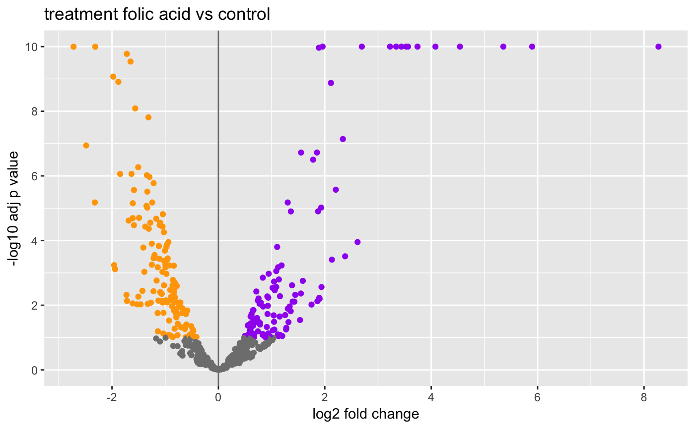
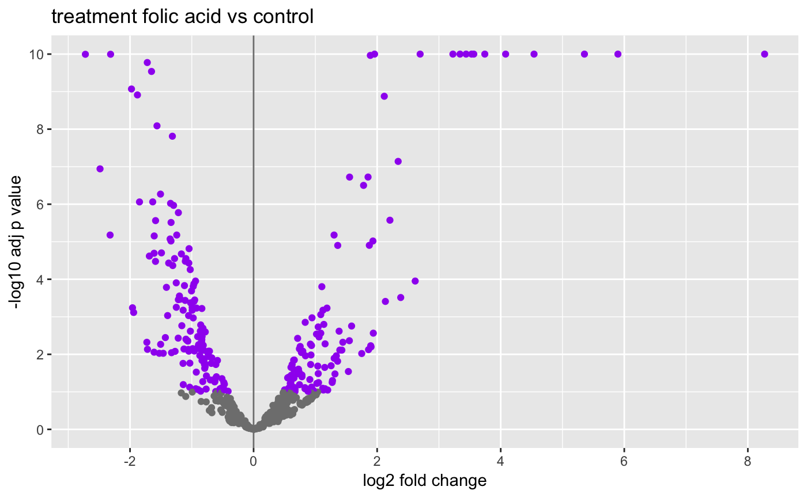

Plot Volcano
plotVolcano(object, ...) # S4 method for DESeqResults plotVolcano(object, alpha = NULL, ...) # S4 method for data.frame plotVolcano(object, alpha = 0.01, padj = TRUE, lfc = 1L, genes = NULL, ntop = 0L, direction = "both", shadeColor = "green", shadeAlpha = 0.25, pointColor = "gray", pointAlpha = 0.75, pointOutlineColor = "darkgray", histograms = TRUE)
| object | Object. |
|---|---|
| ... | Additional arguments. |
| alpha | Alpha level cutoff used for coloring. |
| padj | Use P values adjusted for multiple comparisions. |
| lfc | Log fold change ratio (base 2) cutoff for coloring. |
| genes | Character vector of gene symbols to label. |
| ntop | Number of top genes to label. |
| direction | Plot |
| shadeColor | Shading color for bounding box. |
| shadeAlpha | Shading transparency alpha. |
| pointColor | Point color. |
| pointAlpha | Point transparency alpha. |
| pointOutlineColor | Point outline color. |
| histograms | Show LFC and P value histograms. |
Volcano plot arranged as grid (grid = TRUE), or show()
individual ggplot (grid = FALSE).
This function is an updated variant of
CHBUtils::volcano_density_plot().
Other Differential Expression Plots: plotMA
data(res) # DESeqResults plotVolcano(res, genes = "Sulf1") # data.frame as.data.frame(res) %>% plotVolcano